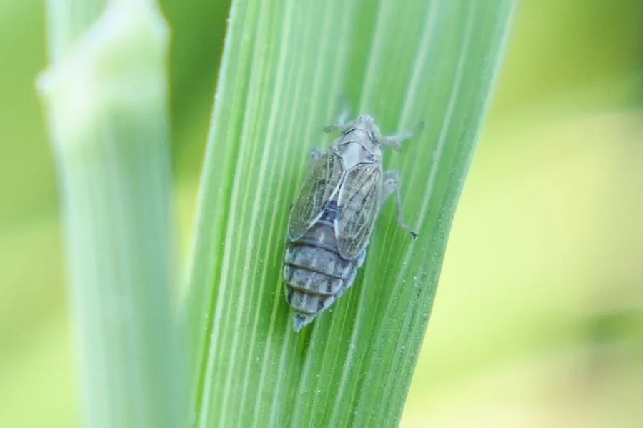

昆虫 · 动物界
白背飞虱 Sogatella furcifera

前胸背板中央有黄白纵带的小型飞虱，长翅型能随季风远距离迁飞，刺吸稻汁并传播水稻黑条矮缩病，是稻区重要害虫。
- 分类
- 门节肢动物门纲昆虫纲目半翅目科飞虱科属白背飞虱属
- 栖息环境
- 水稻田、茭白田和禾本科杂草丛，群集于稻株基部
- 地理分布
- 中国各稻区，以及日本、朝鲜半岛、东南亚和南亚
- 保护级别
- 尚无保护级别；为稻区重要迁飞性害虫
物种志
白背飞虱的体长约四至五毫米，体形细长，雄虫体色黑褐，前胸背板与中胸小盾片中央有一条明显的黄白色纵带，白背飞虱之名由此而来，雌虫体色较浅，呈黄褐至灰黄。它的头顶略向前突出，触角短，后足胫节有刺毛，善跳跃。长翅型个体翅长超过腹部，能远距离飞行；短翅型个体翅短，繁殖力更强。
它分布于中国各稻区，以及日本、朝鲜半岛、东南亚和南亚，栖息在水稻田、茭白田和禾本科杂草丛，每年春夏随西南季风从南方稻区向北迁飞，秋季再回迁，一年发生多代，世代重叠明显。成虫和若虫群集在稻株基部刺吸汁液，造成稻株发黄、倒伏，严重时出现成片枯死的冒穿现象；它还传播南方水稻黑条矮缩病。它尚无保护级别，防治以抗虫品种、天敌保护和药剂为主，迁飞规律是预测预报的关键。
形态与习性
- 体长约四至五毫米，体形细长
- 识别前胸背板与中胸小盾片中央有黄白纵带
- 翅型长翅型善迁飞，短翅型繁殖力强
- 迁飞随季风南北往返，一年多次
- 为害群集稻株基部刺吸，造成冒穿枯死
- 传病传播南方水稻黑条矮缩病
趣味知识
- 它背上那条黄白纵带像一道亮纹，是辨认它的关键。
- 长翅型能借季风飞上千公里，从南方稻区一路迁到北方。
- 稻株基部一片片枯死发黄，多半是它在底下聚着吸汁。